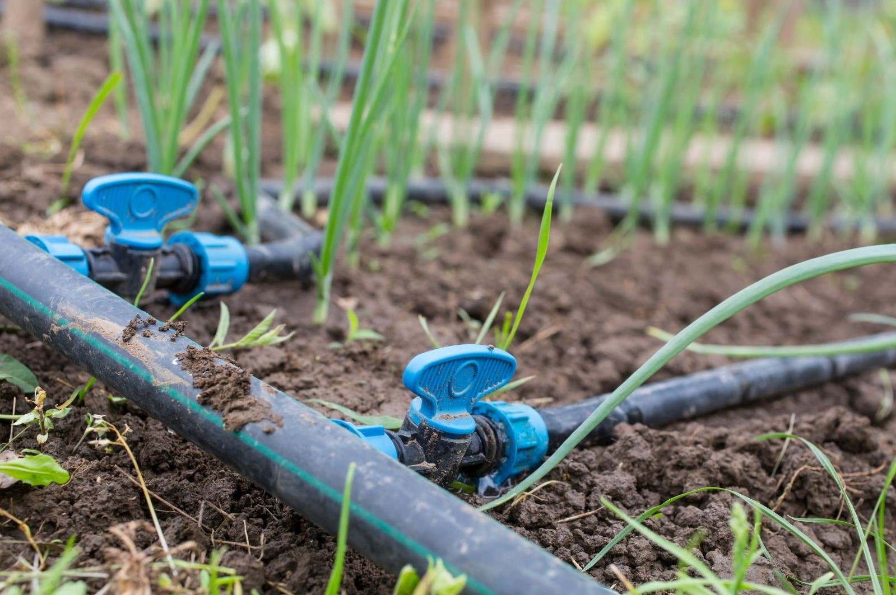
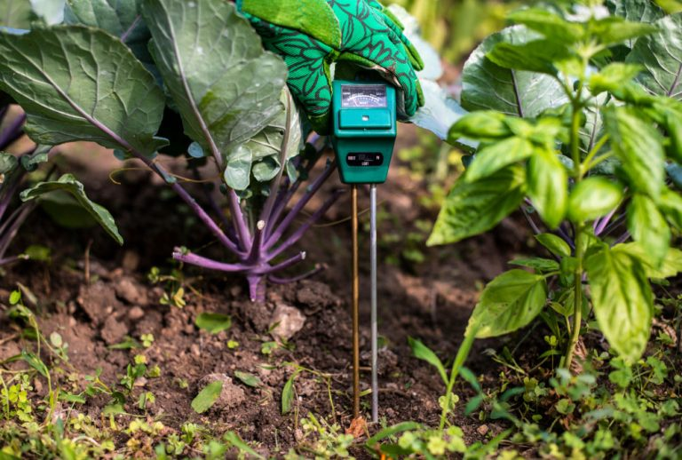
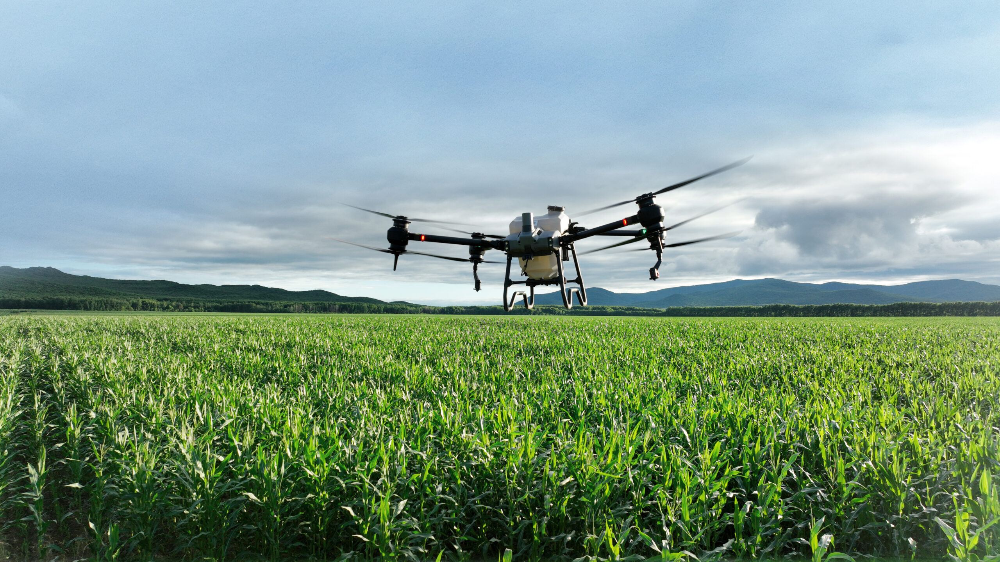
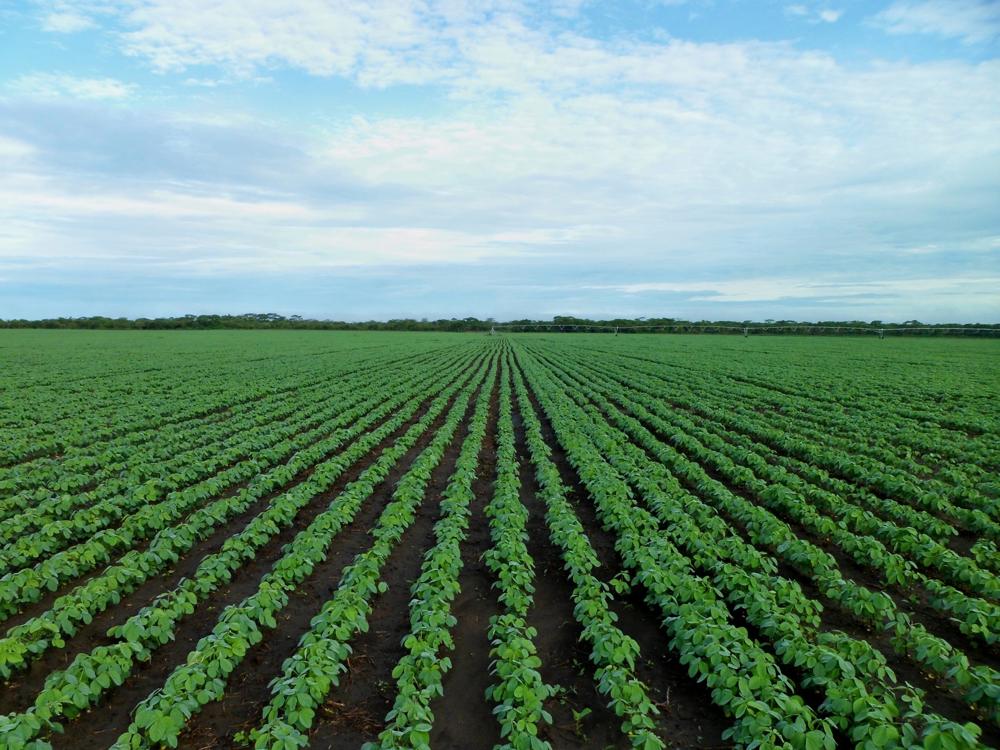

Irrigation Engineering
Master the fundamentals of modern water distribution and drip systems.
View Table
Soil Science & Moisture
Understand volumetric water content and clay vs. sandy soil retention.
View Soil Data
AI in Agriculture
Learn how machine learning and IoT sensors are revolutionizing farming.
Watch Video
Crop Management
Navigate an interactive map of your farm plots to view localized status.
View Plot Map